See the products
 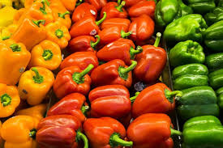
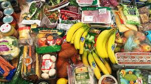
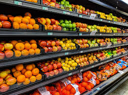
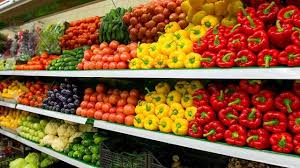
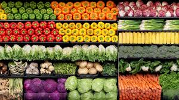
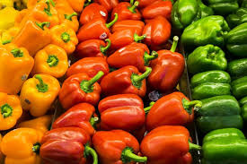
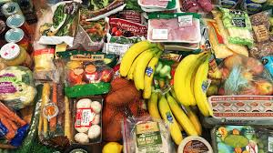
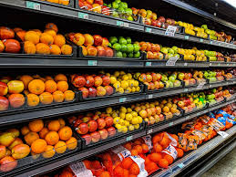
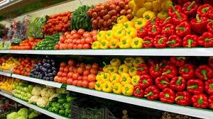
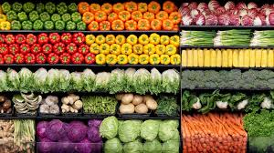
We are the rapid growing grocery shop in the JJ Mall. We sell foods and things like fruits.Our shop sells and and suppilies our consumers with fresh products of high quality.
| Product name | Price in Ksh |
|---|---|
| Onions | 95 per kg |
| Watermelons | 230 |
| Oranges | 150 per kg |
| Vegetables | 200 |
| Cooking oil | 500 per litter |
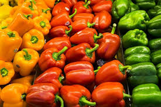
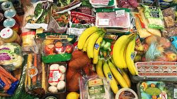
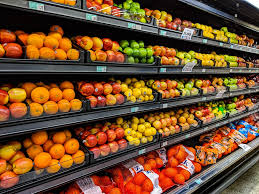
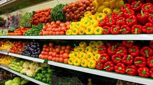
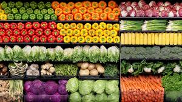
SHOP WITH US:
ENJOYABLE